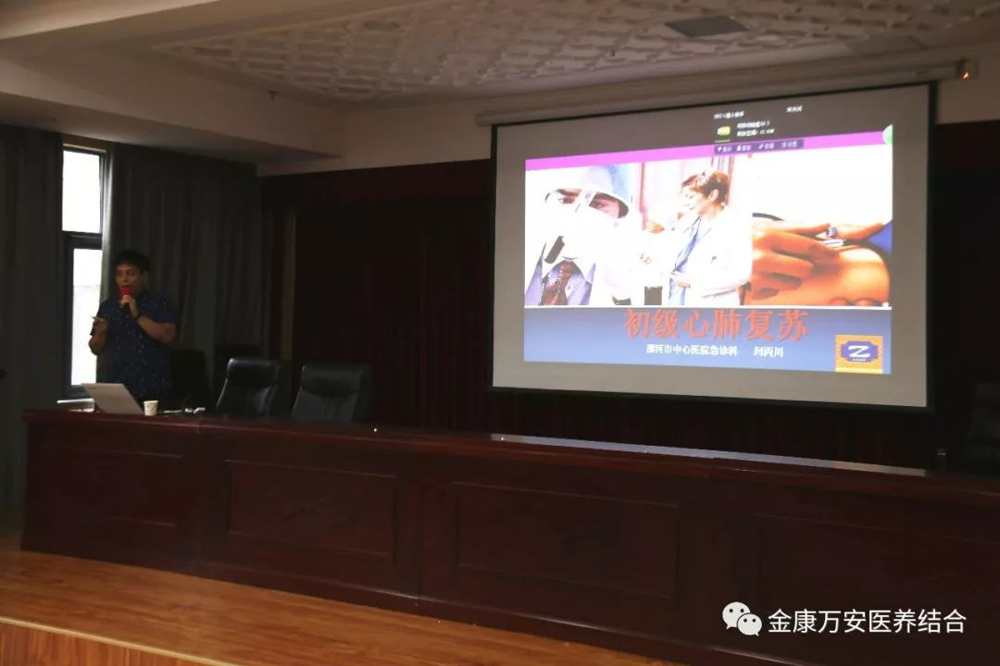
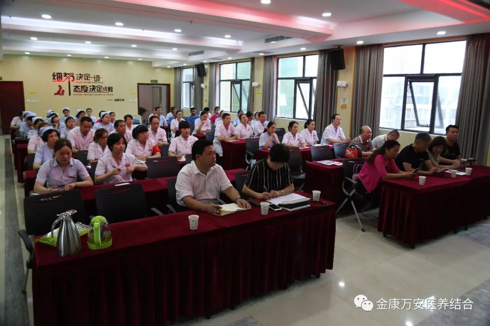
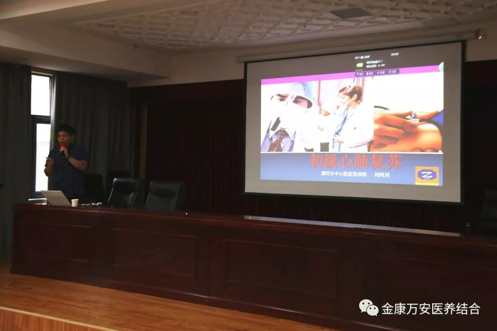
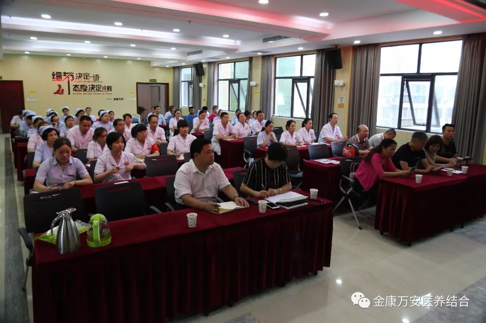
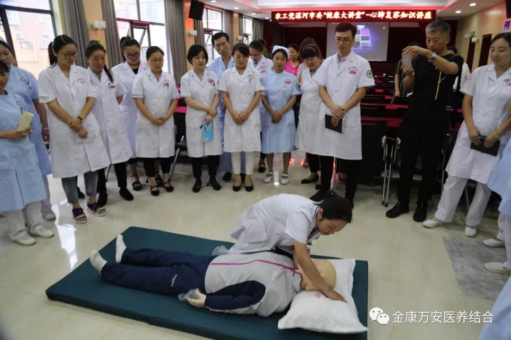
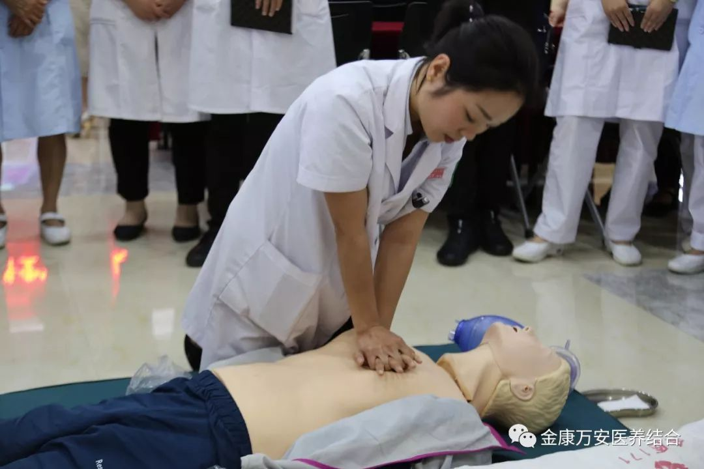
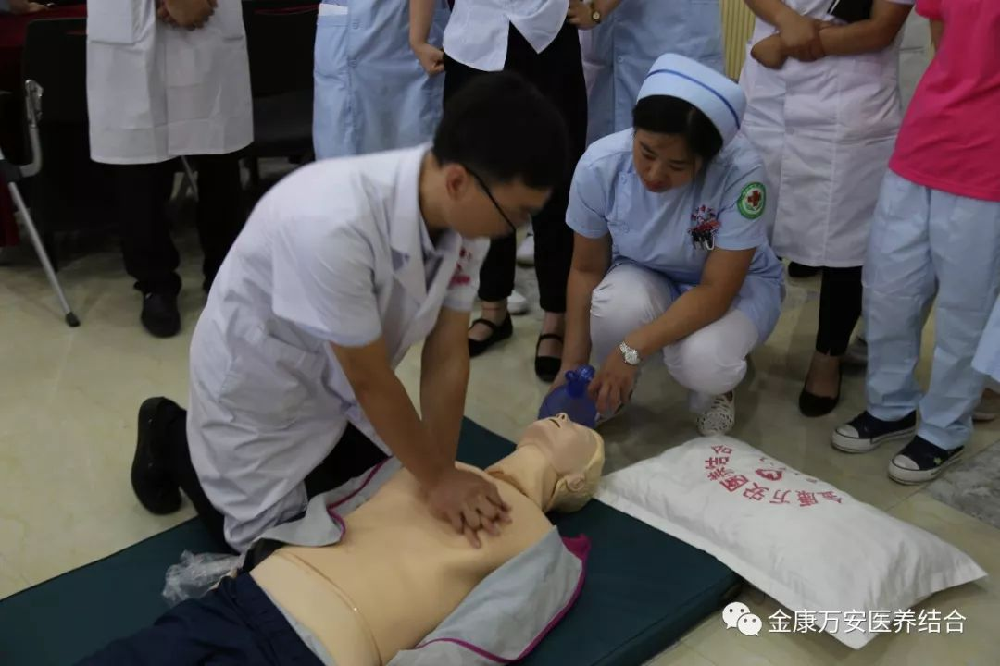
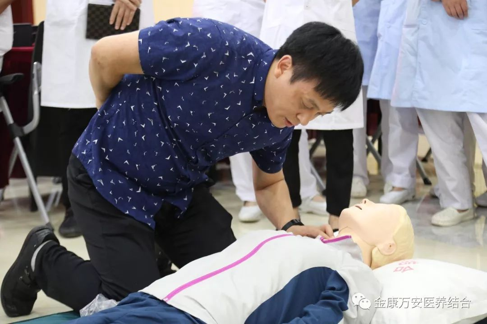
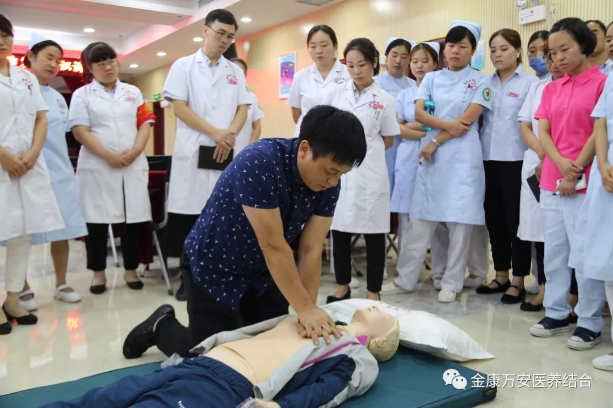

万安医院新闻
农工党漯河市委“健康大讲堂”心肺复苏知识讲座在漯河万安医院成功举办
人气: "" 时间：2018-07-06
按照农工党漯河市委本年度在社会服务工作中的安排和部署，对漯河万安医院进行对口帮扶支援，7月4日下午，特别邀请了农工党漯河市中心医院总支主委、漯河市中心医院急诊科副主任闫丙川在漯河万安医院举办“健康大讲堂系列活动-心肺复苏讲座”。农工党漯河市委副主委郭宏毅，市委委员单晋杰、赫欣，秘书长李瑞红，万安医院院长王卫峰出席了此次讲座。
 



在培训课上，市中心医院闫主任通过自己的工作经验，详细向大家讲解了心肺复苏术的适用情况、注意事项和正确操作方法。理论课后又进行了实操训练，由闫主任亲自向大家演示心肺复苏术的操作并对培训人员的操作练习进行规范指导。
  我院医护人员进行现场心肺复苏操作
 闫主任亲自向大家示范心肺复苏操作正确方法

闫主任向大家讲解除颤仪的使用方法
培训结束后，王院长表示：非常感谢农工党漯河市委以及闫主任对漯河万安医院的大力支持与帮扶，让我院医护人员通过这次急救知识的学习，有效提高了在应急救护方面的专业知识及面对突发事件时应急抢救能力。